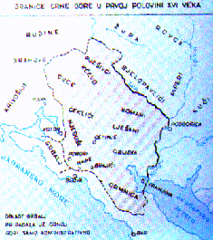
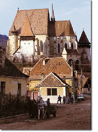

| romanian |
| home page |
|  | Please direct your notices of new URL's or inoperative links to her here. . The Romanian History Index provides Internet resources on the History of Romania, whether from Italy and abroad, in both Romanian and English. If the descriptions of the resource are in Romanian, this can be taken as indicating that no English equivalent of the pages is available. You should take this into account before deciding on keywords for the Search Engine. |
| htm Links to information about Hungarians in Transylvania. htm Collection of articles about Hungarian minority from Romania. htm Background, statistics, history and press reports of the treatment of Hungarians by the Romanian government. htm Provides a account of the growing crisis in nationality relations between the Rumanian state and the Hungarian minority. htm Provides a history of ethnic relations in the region with particular emphasis on Hungarian minorities. |
|  |